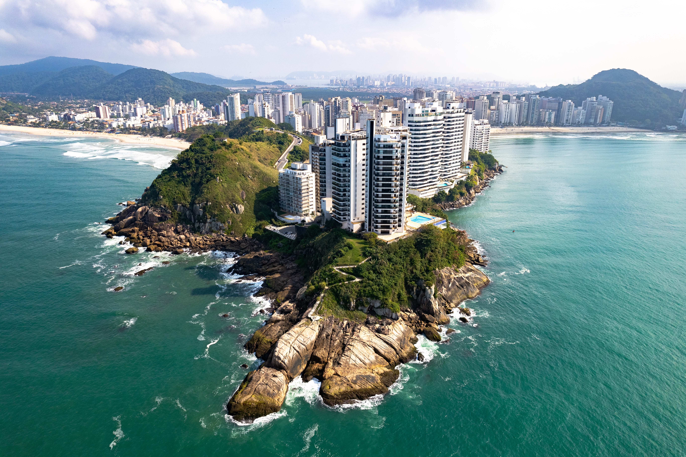
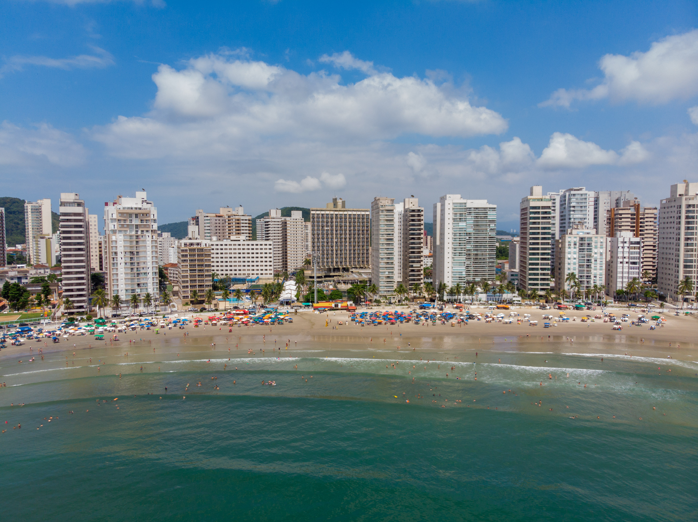
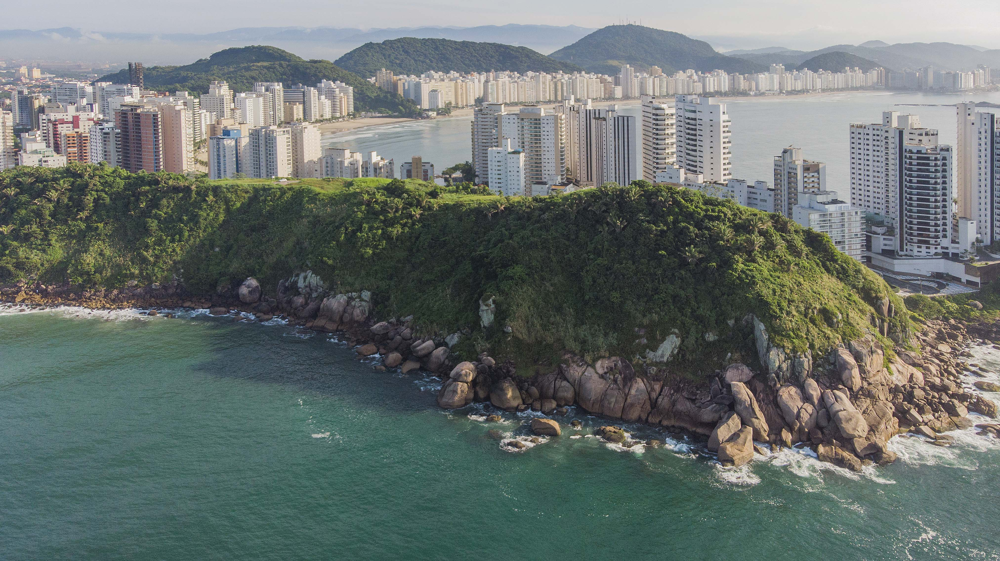

GUARUJÁ
História de Guarujá
Antes da colonização, a região era habitada por povos indígenas, principalmente os tupinambás.
Durante o período colonial, a ilha teve importância estratégica para defesa do litoral.
No século XX, Guarujá começou a se desenvolver como destino turístico, atraindo a elite paulista.
Um marco importante foi a construção do Grand Hotel La Plage (década de 1930), que impulsionou o turismo de luxo.
Guarujá se tornou município independente em 1934.
Curiosidades
- Guarujá tem mais de 20 praias diferentes, cada uma com um estilo (movimentada, surf, isolada, etc.).
- Foi um dos primeiros destinos de luxo do Brasil no século XX.
- Recebe muitos turistas de São Paulo por causa da fácil acessibilidade.
- Algumas praias do Guarujá são consideradas entre as mais limpas e bem avaliadas do estado.
- Fica em uma ilha, a Ilha de Santo Amaro, separada de Santos pelo estuário do porto.
- A travessia de balsa entre Santos e Guarujá é um dos passeios mais típicos da região.
Pontos Turísticos
Praias
- Praia da Enseada – Extensa e movimentada, com ótima estrutura de quiosques e comércio.
- Praia de Pitangueiras – Principal cartão-postal da cidade, com orla urbanizada e muita movimentação.
- Praia de Pernambuco – Conhecida pelas ondas e pelo clima mais sofisticado.
- Praia do Tombo – Muito procurada por surfistas, por causa das boas ondas.
- Praia das Astúrias – Mais tranquila, com águas calmas e boa para famílias.
Outros locais importantes
- Fortaleza de Santo Amaro da Barra Grande – Fortificação histórica construída para defender a entrada do porto.
- Acqua Mundo – Aquário com espécies marinhas e atrações para toda a família.


